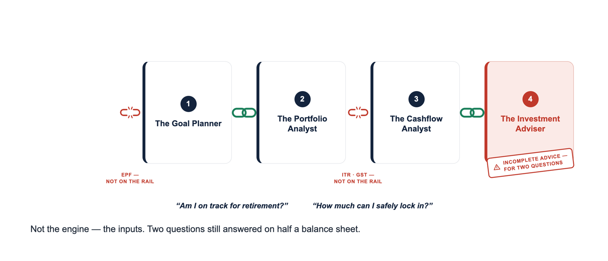
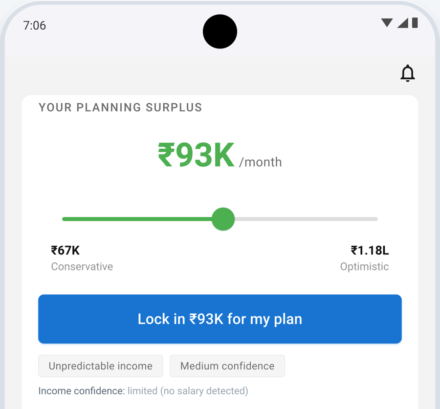
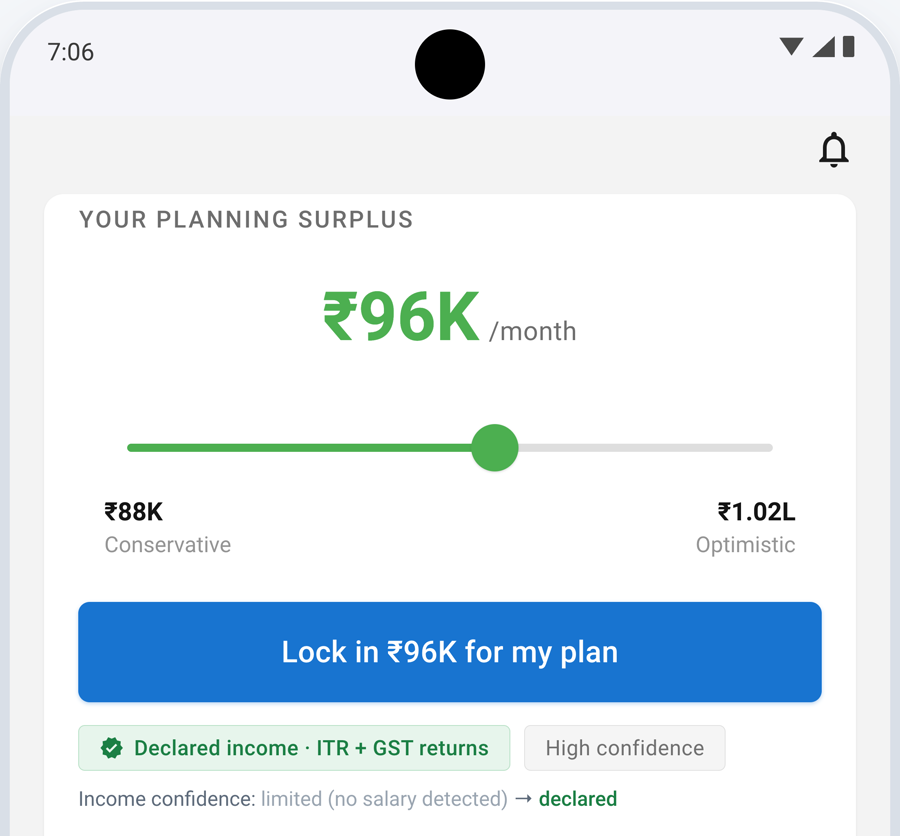

What one missing rail costs — in 77 seconds
The live product on today's rails, then the two demonstrators below. Direct link to the file.
Real advice is a team — and the chain is still broken in two places
Everyone's investing; nobody's advising. Real advice is a goal planner, a portfolio analyst, a cashflow analyst and an adviser — and it only works when their picture connects. The wealthy hire that team; everyone else gets dashboards. Nobody sees the full picture — your money lives in thirty-plus accounts that don't talk to each other. The Account Aggregator rail made it possible to put that picture together; Finwiser became that team as one AI on a consented balance sheet. Two inputs are still not on the rail — so two questions are still answered on half a balance sheet.

Rahul, 32, salaried. We answer without his EPF — his largest retirement asset — because EPFO is not on the Account Aggregator rail. So the engine asks him for a catch-up contribution worth 55% of his monthly surplus. He refuses. With EPF on the rail, the ask is 34%. He acts.
Priya, 34, freelance designer. She files ITR and invoices under a GSTIN, but neither reaches an adviser. Her income is inferred from bank credits, so the engine's income-quality component can only reach about 0.30 — against 0.70–0.95 for a salaried user — and her surplus is a hedged range, not a number she can commit to.
Today: India's salaried middle class — the EPFO link is theirs. Next: the documented self-employed — about 1.53 crore active GST registrations and the non-salaried ITR filers, legible to the tax system, invisible to the advice market — a cohort the app does not serve yet.
Three rails, one advice engine
Account Aggregator · Finvu
Deposits, term & recurring deposits, mutual funds, SIPs, equities via the depositories, NPS. Insurance and other securities opt-in.
Experian bureau
Score, tradelines, EMIs and up to 24 months of repayment history — the liability side of the balance sheet.
Email statements
Credit-card statements and transaction alerts — what no rail carries yet.
Three rails converge on one advice engine and one data model. Transactions become a monthly surplus; holdings a bucketed net worth; 42 SEBI mutual-fund categories are scored against seven goal types; the whole picture yields one ranked next action with its rule shown — a suitability-based priority ranking, not a "best product" claim.
Demonstrator A — EPFO on the rail
We fed a simulated EPFO payload — written as ReBIT XML and validated against the published EPF schema — through the real parser, ingestion processor, net-worth engine, goal auto-linking (a real database transaction) and feasibility check, on a synthetic user.
Before — today's rails
Net worth ₹31.5L · retirement bucket ₹3.4L (10.8%)
Feasibility catch-up SIP ₹23,123/month — 55% of surplus
After — with EPFO
Net worth ₹41.3L (+₹9.8L on the same money) · retirement bucket ₹13.2L (32%)
EPF auto-linked to Retirement and refused to the education goal (lock-in rule)
Feasibility catch-up SIP ₹14,444/month — 34% of surplus
72 contribution rows reveal ₹21,600/month of forced saving no bank statement shows
Demonstrator B — declared income lets her commit more, first
Finwiser asks users to commit their surplus first — "Lock in ₹X for my plan" — so saving happens before spending and expenses adapt to what's left. With inferred income, a freelancer can only safely commit the conservative end of her estimate. Declared income lifts the ceiling on the engine's income-quality component, narrows the estimated band from ±27% to ±7%, and lets her commit ₹21K a month more, first.


Readiness — near-term, further out
| Rail | What exists | What's left |
|---|---|---|
| GSTN · near-term | GSTR-1/3B is already a requestable FI type; our GST consent group carries it (configured, not yet exercised). | A parser and an income signal. GST returns carry turnover, not income — a business owner's personal income is derived from turnover, bank expense patterns and ITR-declared income. ITR is annual and up to fifteen months stale (income level); GSTR-3B is monthly (recency). Both are needed. |
| EPFO · further out | ReBIT publishes an EPF FI schema; our pension parser already targets it. Parsing, storage and goal-linking are done and tested. | EPF is not yet a requestable FI type in AA 2.1.0: a spec revision, EPFO onboarding and FIU re-certification for the type. |
| CBDT · speculative | Neither a schema nor a FIP today. | Everything — we flag this as speculative, not proposed. |
Advice, not lending. Lending consent is one-shot and adversarial — the user consents to be judged. Advisory consent is periodic and aligned — the user consents to be helped, up to 45 fetches a month, from someone who isn't borrowing. That is a non-credit reason for EPFO and GSTN to join the rail.
Who this includes
For the person
A catch-up contribution sized to what they actually have; advice based on declared rather than inferred income. The engine ranks the emergency fund and protection ahead of goals — a floor before a return.
For inclusion
SEBI caps a fixed-fee adviser at ₹1.51 lakh a year per family, and India has roughly 1,000 registered investment advisers for 8 crore-plus salaried workers — one adviser per lakh. AA rails make a fee-only, regulated adviser at ₹199 a month (analysis free) possible for salaried earners; declared income on the rail extends it to the documented-but-invisible. 58.4% of workers are self-employed (PLFS 2023-24) — that is the size of the exclusion, not our reach.
For the ecosystem
AA volume today is lending-led. An advisory FIU brings periodic, aligned consent from people who aren't borrowing.
MVP stage. Once the rails exist we will measure the share of users whose retirement adequacy changes on EPF inclusion; surplus-band width for non-salaried users before and after declared income; and consent completion for the new FI types.
Registration & disclosure
- Account Aggregator
- Certified FIU under Sahamati's framework · Central Registry #178 · live on Finvu
- SEBI RIA
- INA000021331 · BSE enlistment 2408
- Technology entity
- Finwiser Technologies LLP, Bengaluru · DPIIT DIPP240313
- Founder & SPOC
- Chandrachuda Sarma Yemmanuru · chandrachudasarma@finwiser.org